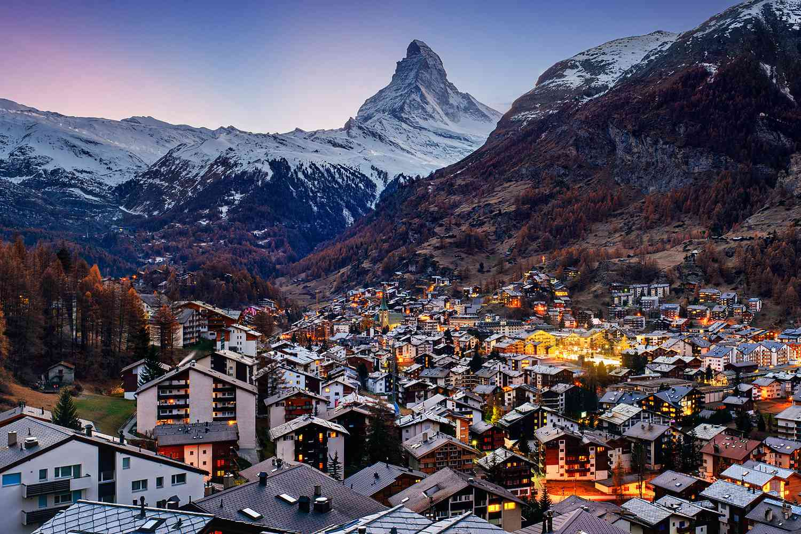
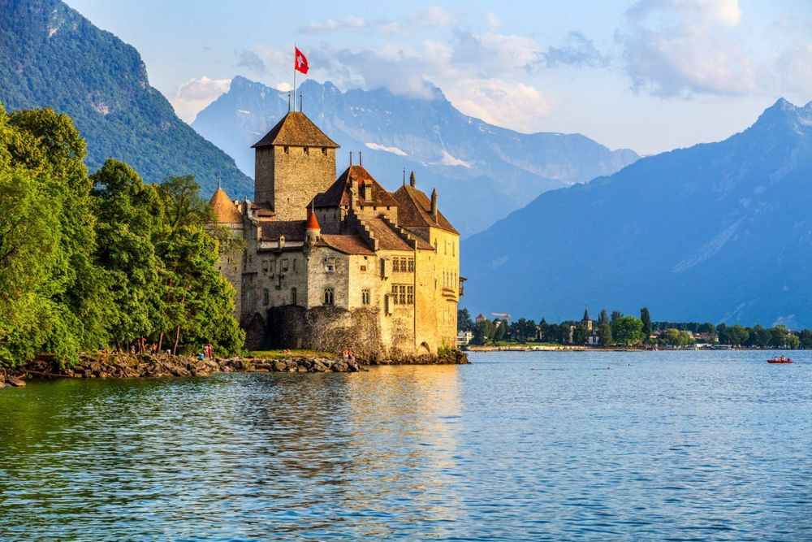
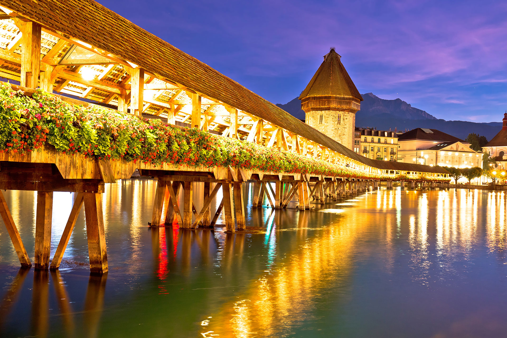
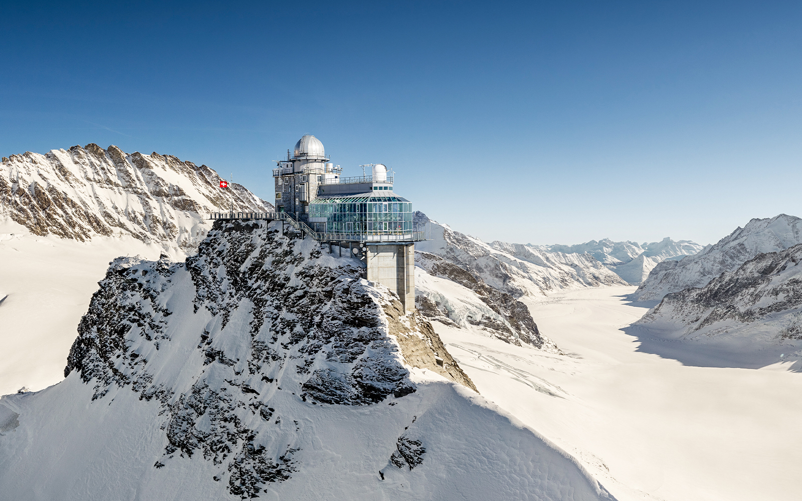
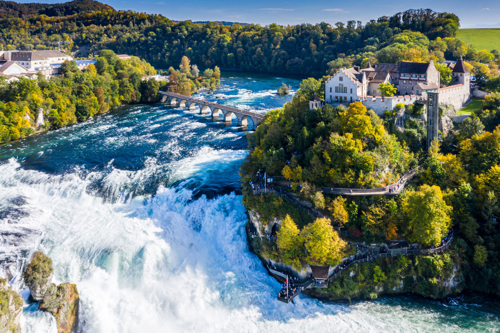

Standing tall and majestic, the Matterhorn is not just a mountain — it’s a once-in-a-lifetime experience. As you arrive near Zermatt, the sharp peak instantly captures your attention and refuses to let go. You can ride scenic cable cars, breathe in the fresh alpine air, and watch the mountain glow beautifully during sunrise and sunset. It’s the kind of place where you don’t just visit — you feel amazed every single moment.

Lake Geneva welcomes you with calm waters, stunning mountain views, and a peaceful atmosphere you will instantly fall in love with. Imagine walking along the lakeside, enjoying cool breezes, or taking a relaxing boat ride while the Alps reflect on the water. Surrounded by beautiful towns and vineyards, this is the perfect place to slow down, relax, and enjoy every moment.

Chapel Bridge in Lucerne feels like walking inside a storybook. Covered with colorful flowers and historic paintings, this wooden bridge offers a magical experience as you cross over the river. With mountains in the background and charming streets nearby, every step here feels peaceful, romantic, and unforgettable — especially when the lights reflect on the water in the evening.

Jungfraujoch takes you on a journey you will never forget. As you travel through the Alps by train, every turn reveals breathtaking views. At the top, you step into a world of snow, ice, and endless mountain peaks. You can walk on glaciers, enjoy panoramic views, and truly feel like you are standing above the clouds. It’s an experience that feels almost unreal.

Rhine Falls is where nature shows its true power. The sound of rushing water, the cool mist in the air, and the sight of massive waterfalls crashing down create an unforgettable experience. You can get close through viewing platforms or even take a boat ride near the falls. It’s thrilling, refreshing, and something you will always remember.